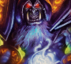
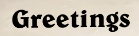

def timeToTroll(): #defining the function wait(, 130) #Waits for the turn to start - could be set to FOREVER but chose 130 for debug reasons sleep(5) #waiting time after turn has started. 90 seconds per round. Set to 76 so there's time to emote. Set this to 2 when testing and debugging rightClick() #Change this is you want to use another hero. click() #GREETINGS if exists(): #this is a stupid fix to the green button at turn one. Checks if the button is yellow or green - either way it's gonna press the button click() else: click() sleep(10) #wait ten seconds. while 2 > 1: #infinite loop unless math gets redefined by God. timeToTroll() #call the troll function